LoopCoder-v2: Only Loop Once for Efficient Test-Time Computation Scaling
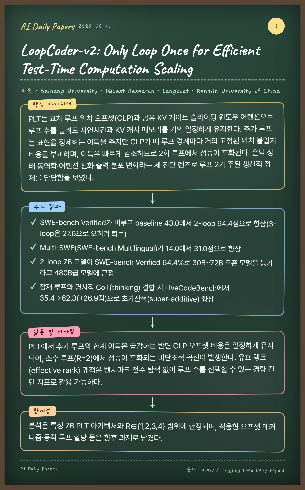
🏛 Beihang University, IQuest Research, Langboat, Renmin University of China
핵심 아이디어
PLT는 교차 루프 위치 오프셋(CLP)과 공유 KV 게이트 슬라이딩 윈도우 어텐션으로 루프 수를 늘려도 지연시간과 KV 캐시 메모리를 거의 일정하게 유지한다. 추가 루프는 표현을 정제하는 이득을 주지만 CLP가 매 루프 경계마다 거의 고정된 위치 불일치 비용을 부과하며, 이득은 빠르게 감소하므로 2회 루프에서 성능이 포화된다. 은닉 상태 동역학·어텐션 진화·출력 분포 변화라는 세 진단 렌즈로 루프 2가 주된 생산적 정제를 담당함을 보였다.
2-loop 7B 모델이 SWE-bench Verified 64.4%로 30B~72B 오픈 모델을 능가하고 480B급 모델에 근접
잠재 루프와 명시적 CoT(thinking) 결합 시 LiveCodeBench에서 35.4→62.3(+26.9점)으로 초가산적(super-additive) 향상
결론 및 시사점
PLT에서 추가 루프의 한계 이득은 급감하는 반면 CLP 오프셋 비용은 일정하게 유지되어, 소수 루프(R=2)에서 성능이 포화되는 비단조적 곡선이 발생한다. 유효 랭크(effective rank) 궤적은 벤치마크 전수 탐색 없이 루프 수를 선택할 수 있는 경량 진단 지표로 활용 가능하다.
한계점
분석은 특정 7B PLT 아키텍처와 R∈{1,2,3,4} 범위에 한정되며, 적응형 오프셋 메커니즘·동적 루프 할당 등은 향후 과제로 남겼다.
카메라 공간 행동 표현·형태(morphology) 조건화·시간 정렬 행동 청킹으로 인간과 로봇 데이터의 공간·구조·시간적 이질성을 통합한다. 5단계 파이프라인으로 1인칭 인간 영상을 로봇 형식의 의사 행동(pseudo-action) 궤적으로 변환하고, 잡음이 많은 의사 행동은 신뢰도 인식 보조 손실로 신뢰 가능한 위치 채널에 집중시켜 안전하게 활용한다.
주요 결과
4.53K시간 로봇·시뮬레이션과 1.48K시간 의사 행동 라벨 인간 영상(총 6.0K+시간)으로 사전학습
RoboCasa GR1 TableTop 평균 성공률 72.8%로 DIAL(70.2%) 등 모든 baseline 능가
RoboTwin 2.0 Easy/Hard에서 각각 91.12%/90.62% 달성(JoyAI-RA 대비 +0.64/+1.34%)
실제 ARX 양팔 로봇 6개 과제 평균 78.3%로 π0.5(71.7%)·GR00T-N1.7(35.6%) 능가, 데이터 부족 상황 미세조정 시 인간 영상 추가로 10%→40%(4배) 향상
결론 및 시사점
통합 행동 표현과 신뢰도 인식 학습이 인간·로봇 혼합 사전학습과 다운스트림 미세조정 모두를 일관되게 개선하며, 대규모 인간 영상이 로봇 시연만으로는 부족한 행동 공간 커버리지를 보완함을 입증했다. 카메라 공간 예측 덕분에 새 임바디먼트는 카메라 외부 파라미터 교체만으로 전이된다.
한계점
현재 평가는 탁상 조작에 집중되어 모바일·전신 휴머노이드·변형 물체 과제로의 확장이 필요하고, 손재주(dexterous) 데이터·힘/토크 센싱 미포함과 회전·미세 손가락 동작의 의사 행동 정확도 한계가 남아 있다.
Zone of Proximal Policy Optimization: Teacher in Prompts, Not Gradients
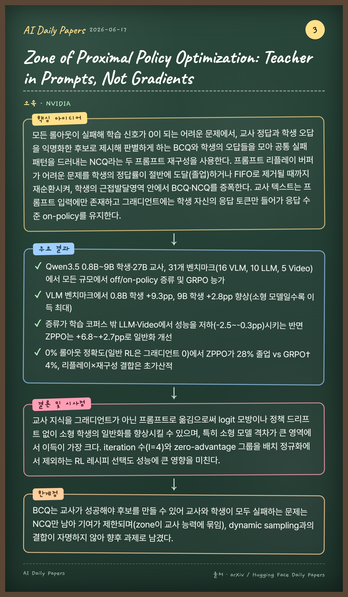
🏛 NVIDIA
핵심 아이디어
모든 롤아웃이 실패해 학습 신호가 0이 되는 어려운 문제에서, 교사 정답과 학생 오답을 익명화한 후보로 제시해 판별하게 하는 BCQ와 학생의 오답들을 모아 공통 실패 패턴을 드러내는 NCQ라는 두 프롬프트 재구성을 사용한다. 프롬프트 리플레이 버퍼가 어려운 문제를 학생의 정답률이 절반에 도달(졸업)하거나 FIFO로 제거될 때까지 재순환시켜, 학생의 근접발달영역 안에서 BCQ·NCQ를 증폭한다. 교사 텍스트는 프롬프트 입력에만 존재하고 그래디언트에는 학생 자신의 응답 토큰만 들어가 응답 수준 on-policy를 유지한다.
주요 결과
Qwen3.5 0.8B~9B 학생·27B 교사, 31개 벤치마크(16 VLM, 10 LLM, 5 Video)에서 모든 규모에서 off/on-policy 증류 및 GRPO 능가
VLM 벤치마크에서 0.8B 학생 +9.3pp, 9B 학생 +2.8pp 향상(소형 모델일수록 이득 최대)
증류가 학습 코퍼스 밖 LLM·Video에서 성능을 저하(-2.5~-0.3pp)시키는 반면 ZPPO는 +6.8~+2.7pp로 일반화 개선
0% 롤아웃 정확도(일반 RL은 그래디언트 0)에서 ZPPO가 28% 졸업 vs GRPO† 4%, 리플레이×재구성 결합은 초가산적
결론 및 시사점
교사 지식을 그래디언트가 아닌 프롬프트로 옮김으로써 logit 모방이나 정책 드리프트 없이 소형 학생의 일반화를 향상시킬 수 있으며, 특히 소형 모델 격차가 큰 영역에서 이득이 가장 크다. iteration 수(I=4)와 zero-advantage 그룹을 배치 정규화에서 제외하는 RL 레시피 선택도 성능에 큰 영향을 미친다.
한계점
BCQ는 교사가 성공해야 후보를 만들 수 있어 교사와 학생이 모두 실패하는 문제는 NCQ만 남아 기여가 제한되며(zone이 교사 능력에 묶임), dynamic sampling과의 결합이 자명하지 않아 향후 과제로 남겼다.
GameCraft-Bench: Can Agents Build Playable Games End-to-End in a Real Game Engine?
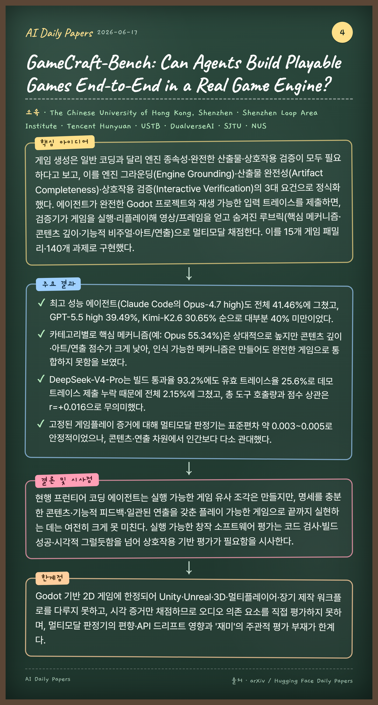
🏛 The Chinese University of Hong Kong, Shenzhen, Shenzhen Loop Area Institute, Tencent Hunyuan, USTB, DualverseAI, SJTU, NUS
핵심 아이디어
게임 생성은 일반 코딩과 달리 엔진 종속성·완전한 산출물·상호작용 검증이 모두 필요하다고 보고, 이를 엔진 그라운딩(Engine Grounding)·산출물 완전성(Artifact Completeness)·상호작용 검증(Interactive Verification)의 3대 요건으로 정식화했다. 에이전트가 완전한 Godot 프로젝트와 재생 가능한 입력 트레이스를 제출하면, 검증기가 게임을 실행·리플레이해 영상/프레임을 얻고 숨겨진 루브릭(핵심 메커니즘·콘텐츠 깊이·기능적 비주얼·아트/연출)으로 멀티모달 채점한다. 이를 15개 게임 패밀리·140개 과제로 구현했다.
주요 결과
최고 성능 에이전트(Claude Code의 Opus-4.7 high)도 전체 41.46%에 그쳤고, GPT-5.5 high 39.49%, Kimi-K2.6 30.65% 순으로 대부분 40% 미만이었다.
카테고리별로 핵심 메커니즘(예: Opus 55.34%)은 상대적으로 높지만 콘텐츠 깊이·아트/연출 점수가 크게 낮아, 인식 가능한 메커니즘은 만들어도 완전한 게임으로 통합하지 못함을 보였다.
DeepSeek-V4-Pro는 빌드 통과율 93.2%에도 유효 트레이스율 25.6%로 데모 트레이스 제출 누락 때문에 전체 2.15%에 그쳤고, 총 도구 호출량과 점수 상관은 r=+0.016으로 무의미했다.
고정된 게임플레이 증거에 대해 멀티모달 판정기는 표준편차 약 0.003~0.005로 안정적이었으나, 콘텐츠·연출 차원에서 인간보다 다소 관대했다.
결론 및 시사점
현행 프런티어 코딩 에이전트는 실행 가능한 게임 유사 조각은 만들지만, 명세를 충분한 콘텐츠·기능적 피드백·일관된 연출을 갖춘 플레이 가능한 게임으로 끝까지 실현하는 데는 여전히 크게 못 미친다. 실행 가능한 창작 소프트웨어 평가는 코드 검사·빌드 성공·시각적 그럴듯함을 넘어 상호작용 기반 평가가 필요함을 시사한다.
한계점
Godot 기반 2D 게임에 한정되어 Unity·Unreal·3D·멀티플레이어·장기 제작 워크플로를 다루지 못하고, 시각 증거만 채점하므로 오디오 의존 요소를 직접 평가하지 못하며, 멀티모달 판정기의 편향·API 드리프트 영향과 '재미'의 주관적 평가 부재가 한계다.
TRIAGE: Dialectical Reasoning for Explainable Risk Prediction on Irregularly Sampled Medical Time Series with LLMs
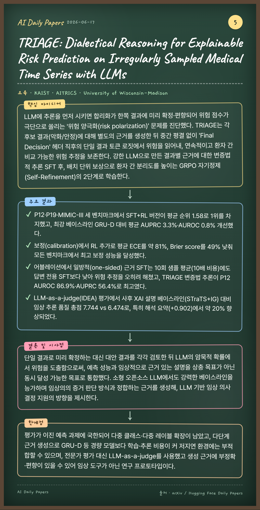
🏛 KAIST, AITRICS, University of Wisconsin-Madison
핵심 아이디어
LLM에 추론을 먼저 시키면 합리화가 한쪽 결과에 미리 확정·편향되어 위험 점수가 극단으로 쏠리는 '위험 양극화(risk polarization)' 문제를 진단했다. TRIAGE는 각 후보 결과(악화/안정)에 대해 별도의 근거를 생성한 뒤 중간 평결 없이 'Final Decision' 헤더 직후의 단일 결과 토큰 로짓에서 위험을 읽어내, 연속적이고 환자 간 비교 가능한 위험 추정을 보존한다. 강한 LLM으로 만든 결과별 근거에 대한 변증법적 추론 SFT 후, 배치 단위 보상으로 환자 간 분리도를 높이는 GRPO 자기정제(Self-Refinement)의 2단계로 학습한다.
주요 결과
P12·P19·MIMIC-III 세 벤치마크에서 SFT+RL 버전이 평균 순위 1.58로 1위를 차지했고, 최강 베이스라인 GRU-D 대비 평균 AUPRC 3.3%·AUROC 0.8% 개선했다.
보정(calibration)에서 RL 추가로 평균 ECE를 약 81%, Brier score를 49% 낮춰 모든 벤치마크에서 최고 보정 성능을 달성했다.
어블레이션에서 일방적(one-sided) 근거 SFT는 10회 샘플 평균(10배 비용)에도 답변 전용 SFT보다 낮아 위험 추정을 오히려 해쳤고, TRIAGE 변증법 추론이 P12 AUROC 86.9%·AUPRC 56.4%로 최고였다.
LLM-as-a-judge(IDEA) 평가에서 사후 XAI 설명 베이스라인(STraTS+IG) 대비 임상 추론 품질 총점 7.744 vs 6.474로, 특히 해석 요약(+0.902)에서 약 20% 향상되었다.
결론 및 시사점
단일 결과로 미리 확정하는 대신 대안 결과를 각각 검토한 뒤 LLM의 암묵적 확률에서 위험을 도출함으로써, 예측 성능과 임상적으로 근거 있는 설명을 상충 목표가 아닌 동시 달성 가능한 목표로 통합했다. 소형 오픈소스 LLM에서도 강력한 베이스라인을 능가하며 임상의의 증거 판단 방식과 정합하는 근거를 생성해, LLM 기반 임상 의사결정 지원의 방향을 제시한다.
한계점
평가가 이진 예측 과제에 국한되어 다중 클래스·다중 레이블 확장이 남았고, 다단계 근거 생성으로 GRU-D 등 경량 모델보다 학습·추론 비용이 커 저지연 환경에는 부적합할 수 있으며, 전문가 평가 대신 LLM-as-a-judge를 사용했고 생성 근거에 부정확·편향이 있을 수 있어 임상 도구가 아닌 연구 프로토타입이다.
LectūraAgents: A Multi-Agent Framework for Adaptive Personalized AI-Assisted Learning and Embodied Teaching
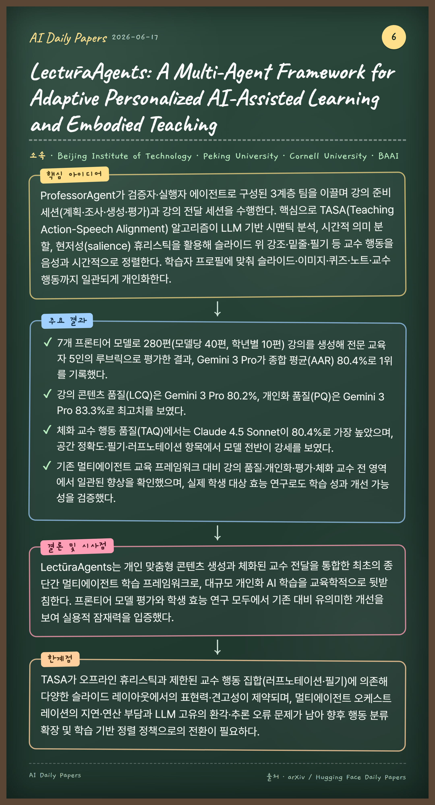
🏛 Beijing Institute of Technology, Peking University, Cornell University, BAAI
핵심 아이디어
ProfessorAgent가 검증자·실행자 에이전트로 구성된 3계층 팀을 이끌며 강의 준비 세션(계획·조사·생성·평가)과 강의 전달 세션을 수행한다. 핵심으로 TASA(Teaching Action-Speech Alignment) 알고리즘이 LLM 기반 시맨틱 분석, 시간적 의미 분할, 현저성(salience) 휴리스틱을 활용해 슬라이드 위 강조·밑줄·필기 등 교수 행동을 음성과 시간적으로 정렬한다. 학습자 프로필에 맞춰 슬라이드·이미지·퀴즈·노트·교수 행동까지 일관되게 개인화한다.
주요 결과
7개 프론티어 모델로 280편(모델당 40편, 학년별 10편) 강의를 생성해 전문 교육자 5인의 루브릭으로 평가한 결과, Gemini 3 Pro가 종합 평균(AAR) 80.4%로 1위를 기록했다.
강의 콘텐츠 품질(LCQ)은 Gemini 3 Pro 80.2%, 개인화 품질(PQ)은 Gemini 3 Pro 83.3%로 최고치를 보였다.
체화 교수 행동 품질(TAQ)에서는 Claude 4.5 Sonnet이 80.4%로 가장 높았으며, 공간 정확도·필기·러프노테이션 항목에서 모델 전반이 강세를 보였다.
기존 멀티에이전트 교육 프레임워크 대비 강의 품질·개인화·평가·체화 교수 전 영역에서 일관된 향상을 확인했으며, 실제 학생 대상 효능 연구로도 학습 성과 개선 가능성을 검증했다.
결론 및 시사점
LectūraAgents는 개인 맞춤형 콘텐츠 생성과 체화된 교수 전달을 통합한 최초의 종단간 멀티에이전트 학습 프레임워크로, 대규모 개인화 AI 학습을 교육학적으로 뒷받침한다. 프론티어 모델 평가와 학생 효능 연구 모두에서 기존 대비 유의미한 개선을 보여 실용적 잠재력을 입증했다.
한계점
TASA가 오프라인 휴리스틱과 제한된 교수 행동 집합(러프노테이션·필기)에 의존해 다양한 슬라이드 레이아웃에서의 표현력·견고성이 제약되며, 멀티에이전트 오케스트레이션의 지연·연산 부담과 LLM 고유의 환각·추론 오류 문제가 남아 향후 행동 분류 확장 및 학습 기반 정렬 정책으로의 전환이 필요하다.
기존 메모리 에이전트는 경험을 저장만 할 뿐 그것을 통해 진화하는 통합 역량이 부족하다는 문제의식에서 출발한다. OPD-Evolver는 빠른 루프(fast loop)에서 궤적·팁·스킬·도구의 4계층 메모리 위계와 상호작용하며 경험을 읽고·쓰고·관리하고, 느린 루프(slow loop)에서는 결과로 보정된 메모리 기여도(outcome-calibrated attribution)와 특권적 사후정보(privileged hindsight)를 활용해 이 네 능력을 배포 가능한 정책으로 온폴리시 자기증류한다. 이를 통해 외부 메모리에 의존하지 않고도 경험을 스스로 진화시키는 '에이전트 진화자(agent evolver)'를 길러낸다.
주요 결과
LifelongAgentBench·MemoryArena·AMA-Bench·InterCode 등 다도메인 벤치마크에서 동일 백본 메모리 기반 방식 10개 서브셋 전부 최고 성능을 달성했고, ReasoningBank 대비 최대 11.5%, Skill0 대비 약 5.8% 향상
OPD-Evolver-9B가 훨씬 큰 STEP-3.5-FLASH(196B)를 10개 중 9개 서브셋에서 능가하고 QWEN3.5-397B-A17B를 6개 서브셋에서 앞섬(예: SQL 64.01 vs 62.74, AMA-SA 52.92 vs 51.41)
학습 기반 방식 비교에서 6개 중 5개 서브셋 우위(MiniHack-KeyRoom 9.80 vs GRPO 3.92, Maze 27.45 vs 23.53)
제거 실험에서 메모리 기여도 제거 시 InterCode 평균 38.67%→32.13%로 가장 큰 하락, 선택·작성·관리를 함께 학습해야 신뢰할 수 있는 자기진화가 가능함을 입증
결론 및 시사점
OPD-Evolver는 이질적 경험 스트림에서 학습한 진화자 능력이 학습 환경을 넘어 일반화됨을 보였으며, 컴팩트한 오픈 모델을 거대 모델과 경쟁 가능한 수준으로 끌어올린다. 이는 단순히 경험을 저장하는 에이전트에서 경험을 스스로의 진화 역량으로 전환하는 에이전트로의 전환을 시사한다.
한계점
LLM 기반 에이전트 일반의 위험(안전하지 않은 도구 사용·프라이버시 유출·편향·의도치 않은 일반화)이 여전히 남아 메모리 감사와 인간 감독 등 안전장치가 필요하다.
Learning from the Self-future: On-policy Self-distillation for dLLMs
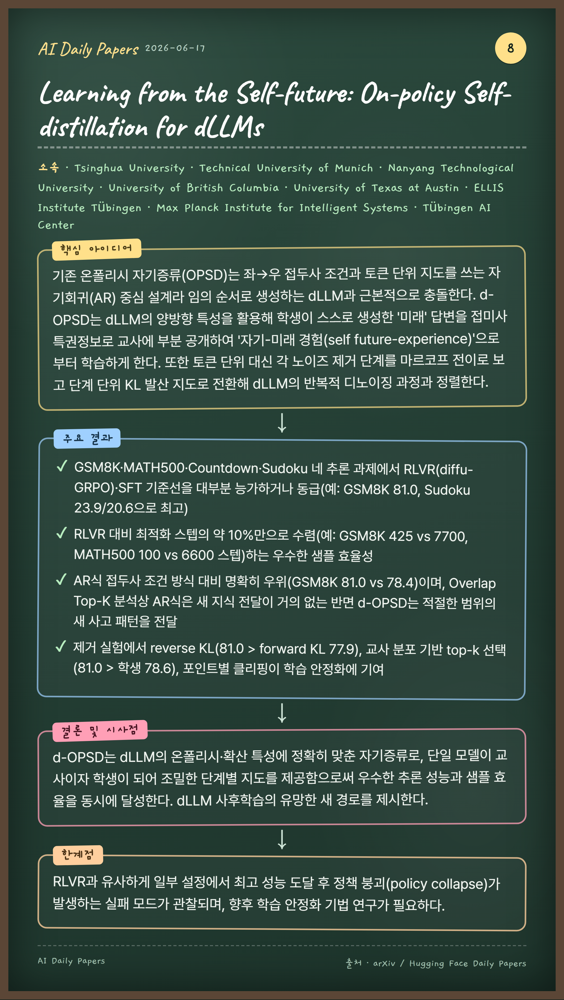
🏛 Tsinghua University, Technical University of Munich, Nanyang Technological University, University of British Columbia, University of Texas at Austin, ELLIS Institute Tübingen, Max Planck Institute for Intelligent Systems, Tübingen AI Center
핵심 아이디어
기존 온폴리시 자기증류(OPSD)는 좌→우 접두사 조건과 토큰 단위 지도를 쓰는 자기회귀(AR) 중심 설계라 임의 순서로 생성하는 dLLM과 근본적으로 충돌한다. d-OPSD는 dLLM의 양방향 특성을 활용해 학생이 스스로 생성한 '미래' 답변을 접미사 특권정보로 교사에 부분 공개하여 '자기-미래 경험(self future-experience)'으로부터 학습하게 한다. 또한 토큰 단위 대신 각 노이즈 제거 단계를 마르코프 전이로 보고 단계 단위 KL 발산 지도로 전환해 dLLM의 반복적 디노이징 과정과 정렬한다.
주요 결과
GSM8K·MATH500·Countdown·Sudoku 네 추론 과제에서 RLVR(diffu-GRPO)·SFT 기준선을 대부분 능가하거나 동급(예: GSM8K 81.0, Sudoku 23.9/20.6으로 최고)
RLVR 대비 최적화 스텝의 약 10%만으로 수렴(예: GSM8K 425 vs 7700, MATH500 100 vs 6600 스텝)하는 우수한 샘플 효율성
AR식 접두사 조건 방식 대비 명확히 우위(GSM8K 81.0 vs 78.4)이며, Overlap Top-K 분석상 AR식은 새 지식 전달이 거의 없는 반면 d-OPSD는 적절한 범위의 새 사고 패턴을 전달
제거 실험에서 reverse KL(81.0 > forward KL 77.9), 교사 분포 기반 top-k 선택(81.0 > 학생 78.6), 포인트별 클리핑이 학습 안정화에 기여
결론 및 시사점
d-OPSD는 dLLM의 온폴리시·확산 특성에 정확히 맞춘 자기증류로, 단일 모델이 교사이자 학생이 되어 조밀한 단계별 지도를 제공함으로써 우수한 추론 성능과 샘플 효율을 동시에 달성한다. dLLM 사후학습의 유망한 새 경로를 제시한다.
한계점
RLVR과 유사하게 일부 설정에서 최고 성능 도달 후 정책 붕괴(policy collapse)가 발생하는 실패 모드가 관찰되며, 향후 학습 안정화 기법 연구가 필요하다.
Show the Signal, Hide the Noise: Spectral Forcing for Pixel-Space Diffusion
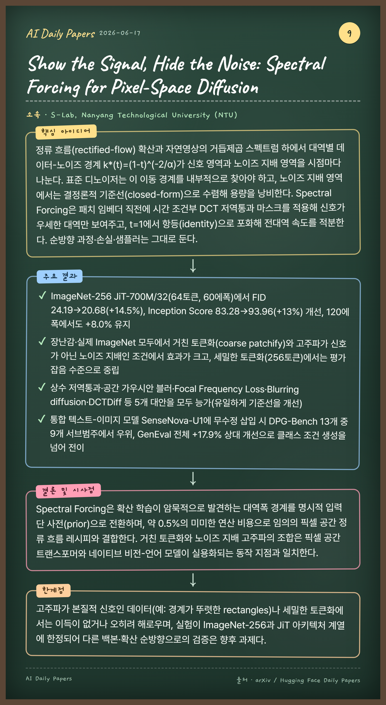
🏛 S-Lab, Nanyang Technological University (NTU)
핵심 아이디어
정류 흐름(rectified-flow) 확산과 자연영상의 거듭제곱 스펙트럼 하에서 대역별 데이터-노이즈 경계 k*(t)=(1-t)^(-2/α)가 신호 영역과 노이즈 지배 영역을 시점마다 나눈다. 표준 디노이저는 이 이동 경계를 내부적으로 찾아야 하고, 노이즈 지배 영역에서는 결정론적 기준선(closed-form)으로 수렴해 용량을 낭비한다. Spectral Forcing은 패치 임베더 직전에 시간 조건부 DCT 저역통과 마스크를 적용해 신호가 우세한 대역만 보여주고, t=1에서 항등(identity)으로 포화해 전대역 속도를 적분한다. 순방향 과정·손실·샘플러는 그대로 둔다.
장난감·실제 ImageNet 모두에서 거친 토큰화(coarse patchify)와 고주파가 신호가 아닌 노이즈 지배인 조건에서 효과가 크고, 세밀한 토큰화(256토큰)에서는 평가 잡음 수준으로 중립
상수 저역통과·공간 가우시안 블러·Focal Frequency Loss·Blurring diffusion·DCTDiff 등 5개 대안을 모두 능가(유일하게 기준선을 개선)
통합 텍스트-이미지 모델 SenseNova-U1에 무수정 삽입 시 DPG-Bench 13개 중 9개 서브범주에서 우위, GenEval 전체 +17.9% 상대 개선으로 클래스 조건 생성을 넘어 전이
결론 및 시사점
Spectral Forcing은 확산 학습이 암묵적으로 발견하는 대역폭 경계를 명시적 입력단 사전(prior)으로 전환하며, 약 0.5%의 미미한 연산 비용으로 임의의 픽셀 공간 정류 흐름 레시피와 결합한다. 거친 토큰화와 노이즈 지배 고주파의 조합은 픽셀 공간 트랜스포머와 네이티브 비전-언어 모델이 실용화되는 동작 지점과 일치한다.
한계점
고주파가 본질적 신호인 데이터(예: 경계가 뚜렷한 rectangles)나 세밀한 토큰화에서는 이득이 없거나 오히려 해로우며, 실험이 ImageNet-256과 JiT 아키텍처 계열에 한정되어 다른 백본·확산 순방향으로의 검증은 향후 과제다.
Rethinking the Role of Efficient Attention in Hybrid Architectures
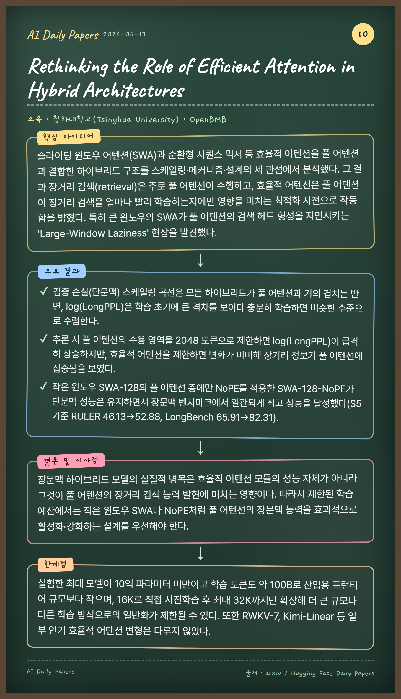
🏛 칭화대학교(Tsinghua University), OpenBMB
핵심 아이디어
슬라이딩 윈도우 어텐션(SWA)과 순환형 시퀀스 믹서 등 효율적 어텐션을 풀 어텐션과 결합한 하이브리드 구조를 스케일링·메커니즘·설계의 세 관점에서 분석했다. 그 결과 장거리 검색(retrieval)은 주로 풀 어텐션이 수행하고, 효율적 어텐션은 풀 어텐션이 장거리 검색을 얼마나 빨리 학습하는지에만 영향을 미치는 최적화 사전으로 작동함을 밝혔다. 특히 큰 윈도우의 SWA가 풀 어텐션의 검색 헤드 형성을 지연시키는 'Large-Window Laziness' 현상을 발견했다.
주요 결과
검증 손실(단문맥) 스케일링 곡선은 모든 하이브리드가 풀 어텐션과 거의 겹치는 반면, log(LongPPL)은 학습 초기에 큰 격차를 보이다 충분히 학습하면 비슷한 수준으로 수렴한다.
추론 시 풀 어텐션의 수용 영역을 2048 토큰으로 제한하면 log(LongPPL)이 급격히 상승하지만, 효율적 어텐션을 제한하면 변화가 미미해 장거리 정보가 풀 어텐션에 집중됨을 보였다.
작은 윈도우 SWA-128의 풀 어텐션 층에만 NoPE를 적용한 SWA-128-NoPE가 단문맥 성능은 유지하면서 장문맥 벤치마크에서 일관되게 최고 성능을 달성했다(S5 기준 RULER 46.13→52.88, LongBench 65.91→82.31).
결론 및 시사점
장문맥 하이브리드 모델의 실질적 병목은 효율적 어텐션 모듈의 성능 자체가 아니라 그것이 풀 어텐션의 장거리 검색 능력 발현에 미치는 영향이다. 따라서 제한된 학습 예산에서는 작은 윈도우 SWA나 NoPE처럼 풀 어텐션의 장문맥 능력을 효과적으로 활성화·강화하는 설계를 우선해야 한다.
한계점
실험한 최대 모델이 10억 파라미터 미만이고 학습 토큰도 약 100B로 산업용 프런티어 규모보다 작으며, 16K로 직접 사전학습 후 최대 32K까지만 확장해 더 큰 규모나 다른 학습 방식으로의 일반화가 제한될 수 있다. 또한 RWKV-7, Kimi-Linear 등 일부 인기 효율적 어텐션 변형은 다루지 않았다.
ChLogic: Evaluating Robustness of Logical Reasoning in Chinese Expressions
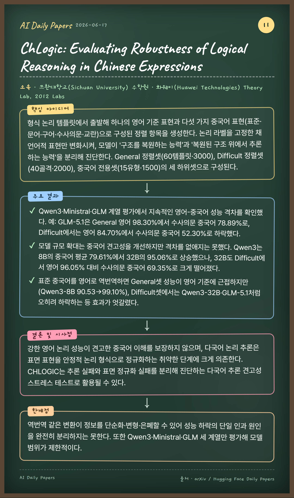
🏛 쓰촨대학교(Sichuan University) 수학원, 화웨이(Huawei Technologies) Theory Lab, 2012 Labs
핵심 아이디어
형식 논리 템플릿에서 출발해 하나의 영어 기준 표현과 다섯 가지 중국어 표현(표준·문어·구어·수사의문·교란)으로 구성된 정렬 항목을 생성한다. 논리 라벨을 고정한 채 언어적 표현만 변화시켜, 모델이 '구조를 복원하는 능력'과 '복원된 구조 위에서 추론하는 능력'을 분리해 진단한다. General 정렬셋(60템플릿·3000), Difficult 정렬셋(40골격·2000), 중국어 전용셋(15유형·1500)의 세 하위셋으로 구성된다.
주요 결과
Qwen3·Ministral·GLM 계열 평가에서 지속적인 영어-중국어 성능 격차를 확인했다. 예: GLM-5.1은 General 영어 98.30%에서 수사의문 중국어 78.89%로, Difficult에서는 영어 84.70%에서 수사의문 중국어 52.30%로 하락했다.
모델 규모 확대는 중국어 견고성을 개선하지만 격차를 없애지는 못했다. Qwen3는 8B의 중국어 평균 79.61%에서 32B의 95.06%로 상승했으나, 32B도 Difficult에서 영어 96.05% 대비 수사의문 중국어 69.35%로 크게 떨어졌다.
표준 중국어를 영어로 역번역하면 General셋 성능이 영어 기준에 근접하지만(Qwen3-8B 90.53→99.10%), Difficult셋에서는 Qwen3-32B·GLM-5.1처럼 오히려 하락하는 등 효과가 엇갈렸다.
결론 및 시사점
강한 영어 논리 성능이 견고한 중국어 이해를 보장하지 않으며, 다국어 논리 추론은 표면 표현을 안정적 논리 형식으로 정규화하는 취약한 단계에 크게 의존한다. CHLOGIC는 추론 실패와 표면 정규화 실패를 분리해 진단하는 다국어 추론 견고성 스트레스 테스트로 활용될 수 있다.
한계점
역번역 같은 변환이 정보를 단순화·변형·은폐할 수 있어 성능 하락의 단일 인과 원인을 완전히 분리하지는 못한다. 또한 Qwen3·Ministral·GLM 세 계열만 평가해 모델 범위가 제한적이다.
A Gradient Perspective on RLVR Stability and Winner Advantage Policy Optimization
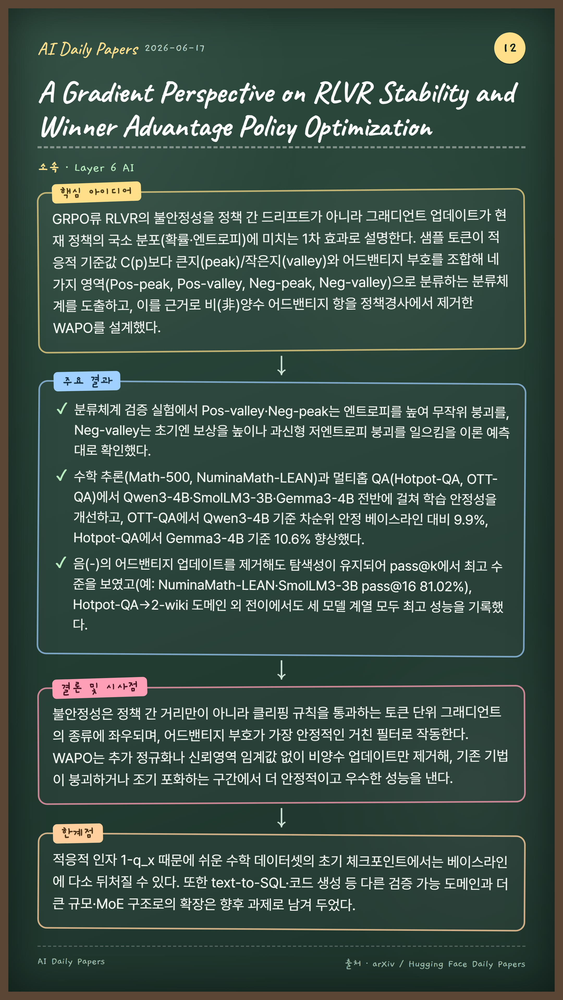
🏛 Layer 6 AI
핵심 아이디어
GRPO류 RLVR의 불안정성을 정책 간 드리프트가 아니라 그래디언트 업데이트가 현재 정책의 국소 분포(확률·엔트로피)에 미치는 1차 효과로 설명한다. 샘플 토큰이 적응적 기준값 C(p)보다 큰지(peak)/작은지(valley)와 어드밴티지 부호를 조합해 네 가지 영역(Pos-peak, Pos-valley, Neg-peak, Neg-valley)으로 분류하는 분류체계를 도출하고, 이를 근거로 비(非)양수 어드밴티지 항을 정책경사에서 제거한 WAPO를 설계했다.
주요 결과
분류체계 검증 실험에서 Pos-valley·Neg-peak는 엔트로피를 높여 무작위 붕괴를, Neg-valley는 초기엔 보상을 높이나 과신형 저엔트로피 붕괴를 일으킴을 이론 예측대로 확인했다.
수학 추론(Math-500, NuminaMath-LEAN)과 멀티홉 QA(Hotpot-QA, OTT-QA)에서 Qwen3-4B·SmolLM3-3B·Gemma3-4B 전반에 걸쳐 학습 안정성을 개선하고, OTT-QA에서 Qwen3-4B 기준 차순위 안정 베이스라인 대비 9.9%, Hotpot-QA에서 Gemma3-4B 기준 10.6% 향상했다.
음(-)의 어드밴티지 업데이트를 제거해도 탐색성이 유지되어 pass@k에서 최고 수준을 보였고(예: NuminaMath-LEAN·SmolLM3-3B pass@16 81.02%), Hotpot-QA→2-wiki 도메인 외 전이에서도 세 모델 계열 모두 최고 성능을 기록했다.
결론 및 시사점
불안정성은 정책 간 거리만이 아니라 클리핑 규칙을 통과하는 토큰 단위 그래디언트의 종류에 좌우되며, 어드밴티지 부호가 가장 안정적인 거친 필터로 작동한다. WAPO는 추가 정규화나 신뢰영역 임계값 없이 비양수 업데이트만 제거해, 기존 기법이 붕괴하거나 조기 포화하는 구간에서 더 안정적이고 우수한 성능을 낸다.
한계점
적응적 인자 1-q_x 때문에 쉬운 수학 데이터셋의 초기 체크포인트에서는 베이스라인에 다소 뒤처질 수 있다. 또한 text-to-SQL·코드 생성 등 다른 검증 가능 도메인과 더 큰 규모·MoE 구조로의 확장은 향후 과제로 남겨 두었다.
ActWorld: From Explorable to Interactive World Model via Action-Aware Memory
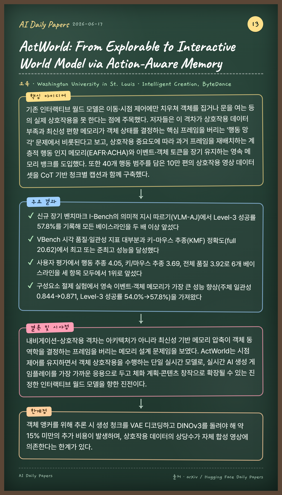
🏛 Washington University in St. Louis, Intelligent Creation, ByteDance
핵심 아이디어
기존 인터랙티브 월드 모델은 이동·시점 제어에만 치우쳐 객체를 집거나 문을 여는 등의 실제 상호작용을 못 한다는 점에 주목했다. 저자들은 이 격차가 상호작용 데이터 부족과 최신성 편향 메모리가 객체 상태를 결정하는 핵심 프레임을 버리는 '행동 망각' 문제에서 비롯된다고 보고, 상호작용 중요도에 따라 과거 프레임을 재배치하는 계층적 행동 인지 메모리(EAFR·ACHA)와 이벤트·객체 토큰을 장기 유지하는 영속 메모리 뱅크를 도입했다. 또한 40개 행동 범주를 담은 10만 편의 상호작용 영상 데이터셋을 CoT 기반 청크별 캡션과 함께 구축했다.
주요 결과
신규 장기 벤치마크 I-Bench의 의미적 지시 따르기(VLM-AJ)에서 Level-3 성공률 57.8%를 기록해 모든 베이스라인을 두 배 이상 앞섰다
VBench 시각 품질·일관성 지표 대부분과 키-마우스 추종(KMF) 정확도(full 20.62)에서 최고 또는 준최고 성능을 달성했다
사용자 평가에서 행동 추종 4.05, 키/마우스 추종 3.69, 전체 품질 3.92로 6개 베이스라인을 세 항목 모두에서 1위로 앞섰다
구성요소 절제 실험에서 영속 이벤트·객체 메모리가 가장 큰 성능 향상(주체 일관성 0.844→0.871, Level-3 성공률 54.0%→57.8%)을 가져왔다
결론 및 시사점
내비게이션-상호작용 격차는 아키텍처가 아니라 최신성 기반 메모리 압축이 객체 동역학을 결정하는 프레임을 버리는 메모리 설계 문제임을 보였다. ActWorld는 시점 제어를 유지하면서 객체 상호작용을 수행하는 단일 실시간 모델로, 실시간 AI 생성 게임플레이를 가장 가까운 응용으로 두고 체화 계획·콘텐츠 창작으로 확장될 수 있는 진정한 인터랙티브 월드 모델을 향한 진전이다.
한계점
객체 앵커를 위해 추론 시 생성 청크를 VAE 디코딩하고 DINOv3를 돌려야 해 약 15% 미만의 추가 비용이 발생하며, 상호작용 데이터의 상당수가 자체 합성 영상에 의존한다는 한계가 있다.
충실한 장기 시뮬레이션은 깊은 계산을 요구하지만 깊은 모델은 배포 비용이 크고 오차가 누적된다는 긴장 관계를 해결하고자 했다. 저자들은 물리 동역학이 동일한 법칙의 반복 적용이라는 점에 착안해, 파라미터 공유 순환 블록에 스펙트럴 노름 제약을 둔 안정적 잔차 동역학을 결합하고 전이 복잡도에 따라 반복 깊이를 자동 조절하는 적응적 조기 종료를 도입했다. 또한 중간 디코딩 없이 잠재 공간에서만 다단계 롤아웃을 진행하고 마지막에만 디코딩하는 'Deferred Decoding'을 제안해 반복적 잠재 깊이를 새로운 스케일링 축으로 정립했다.
주요 결과
약 10억(1B) 파라미터 모델로 ScienceWorld 월드 모델링에서 평균 EM 68.4%를 기록해 100배 이상 큰 claude-opus-4-6-max(47.2%)를 21.2%p 앞섰으며 Lifespan 과제는 0%→100%로 개선했다
AlfWorld에서 BLEU-4 71.6%로 4개 모델 중 최고, EM·Token F1에서 2위를 기록하며 작은 모델 규모 대비 경쟁력을 보였다
기존 대비 최대 100배의 파라미터 효율을 달성하면서 예측 품질을 유지했다
Deferred Decoding은 롤아웃 단계가 누적될수록 효과가 커져 ScienceWorld 5단계 기준 gemini-3-flash 대비 EM을 최대 113.8% 상대 개선했다
결론 및 시사점
루프형 트랜스포머가 물리 시스템 고유의 반복성을 구조적으로 모사하면서도 작은 파라미터로 충실한 장기 시뮬레이션을 제공함을 입증했다. 스펙트럴 노름 제약이 롤아웃 길이와 무관하게 증명 가능한 안정성을 보장하고 적응적 계산이 전이 난이도에 맞춰 깊이를 조절함으로써, 모델 크기·데이터량과 직교하는 '반복적 잠재 깊이'라는 새로운 스케일링 축을 제시했다.
한계점
현 논문은 의도적으로 공개 범위를 제한한 상태로, 더 넓은 계열 간 위치 분석·풍부한 스케일링 법칙 특성화·확장된 최적화 공개가 향후 과제로 남으며, 안정적 대규모 학습을 위한 커리큘럼 기반 엔지니어링이 필요하다.
Unified Multimodal Autoregressive Modeling with Shared Context-Visual Tokenizer is Key to Unification
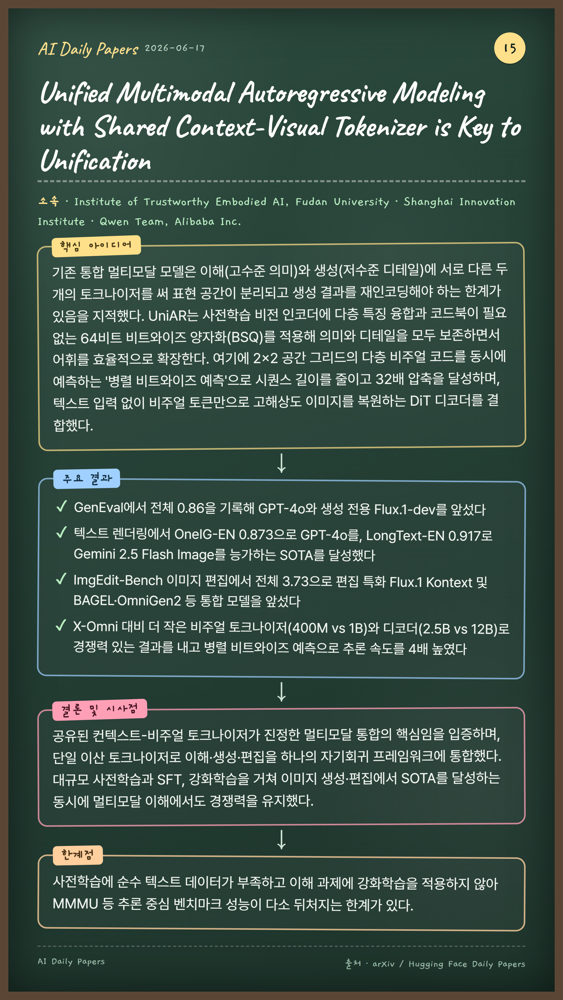
🏛 Institute of Trustworthy Embodied AI, Fudan University, Shanghai Innovation Institute, Qwen Team, Alibaba Inc.
핵심 아이디어
기존 통합 멀티모달 모델은 이해(고수준 의미)와 생성(저수준 디테일)에 서로 다른 두 개의 토크나이저를 써 표현 공간이 분리되고 생성 결과를 재인코딩해야 하는 한계가 있음을 지적했다. UniAR는 사전학습 비전 인코더에 다층 특징 융합과 코드북이 필요 없는 64비트 비트와이즈 양자화(BSQ)를 적용해 의미와 디테일을 모두 보존하면서 어휘를 효율적으로 확장한다. 여기에 2×2 공간 그리드의 다층 비주얼 코드를 동시에 예측하는 '병렬 비트와이즈 예측'으로 시퀀스 길이를 줄이고 32배 압축을 달성하며, 텍스트 입력 없이 비주얼 토큰만으로 고해상도 이미지를 복원하는 DiT 디코더를 결합했다.
주요 결과
GenEval에서 전체 0.86을 기록해 GPT-4o와 생성 전용 Flux.1-dev를 앞섰다
ImgEdit-Bench 이미지 편집에서 전체 3.73으로 편집 특화 Flux.1 Kontext 및 BAGEL·OmniGen2 등 통합 모델을 앞섰다
X-Omni 대비 더 작은 비주얼 토크나이저(400M vs 1B)와 디코더(2.5B vs 12B)로 경쟁력 있는 결과를 내고 병렬 비트와이즈 예측으로 추론 속도를 4배 높였다
결론 및 시사점
공유된 컨텍스트-비주얼 토크나이저가 진정한 멀티모달 통합의 핵심임을 입증하며, 단일 이산 토크나이저로 이해·생성·편집을 하나의 자기회귀 프레임워크에 통합했다. 대규모 사전학습과 SFT, 강화학습을 거쳐 이미지 생성·편집에서 SOTA를 달성하는 동시에 멀티모달 이해에서도 경쟁력을 유지했다.
한계점
사전학습에 순수 텍스트 데이터가 부족하고 이해 과제에 강화학습을 적용하지 않아 MMMU 등 추론 중심 벤치마크 성능이 다소 뒤처지는 한계가 있다.
컴퓨터 사용 에이전트(CUA) 학습에 쓰이는 최대 공개 데이터셋(AgentNet)이 오히려 성능을 떨어뜨리는 부정적 전이를 일으킨다는 점에 착안해, 완전 자동화된 합성 데이터 파이프라인을 제안했다. 단일 VLM(Kimi-K2.5)을 목표 생성기·사전조건 판정기·궤적 실행기로 동시에 활용해 계획자-실행자 간 능력 격차를 없애고, 실제 스프레드시트·프레젠테이션으로 바탕화면을 채운 뒤 바이너리 사전조건 검증을 통과한 실행 가능한 작업만 수집한다. 각 궤적을 단계-접두사(step-prefix)로 확장해 추론 시점과 동일한 컨텍스트 레이아웃으로 학습 샘플을 만든다.
주요 결과
UI-TARS 7B를 ProCUA-SFT로 1 epoch 학습 시 OSWorld 성공률 45.0% 달성(기본 모델 26.3% 대비 +18.7%p)
동일 모델을 AgentNet으로 학습하면 26.3%에서 8~10%로 급락하는 부정적 전이가 발생, ProCUA가 이보다 35%p 이상 우수
데이터 다양화 전략 비교에서 '앱 조합별 라운드로빈 샘플링'이 30.9%로 유일하게 기본 모델을 상회
ProCUA 궤적은 AgentNet 대비 평균 길이가 약 1.8배(약 30 vs 17 스텝)로 길고, 키보드 동작 비중이 높아 더 결정적인 상호작용을 학습
결론 및 시사점
정밀한 사전조건 검증을 통한 실행 가능 작업 합성, 실제 복잡 문서로 바탕화면 시딩, 단일 VLM 활용이라는 세 가지 설계가 핵심이며, 합성 데이터가 사람의 시연 데이터를 능가할 수 있음을 보였다. 이 데이터의 일부는 Nemotron 3 Nano Omni 모델 학습에 실제로 활용되어 그 컴퓨터 사용 능력에 기여했다.
한계점
현재는 단일 VLM(Kimi-K2.5)과 Linux 단일 OS 환경에 의존하므로, 향후 더 강력한 오픈웨이트 VLM·추가 OS 플랫폼·외부 보상 모델이 마련되면 이를 반영해 데이터셋을 개선할 필요가 있다.
층마다 계산 역할이 다르므로 깊이에 따라 폭(용량)을 불균등하게 배분하자는 아이디어다. 전역 잔차 스트림 폭은 고정하되 각 블록이 그 일부 슬라이스만 읽고 쓰며, 사용하지 않는 차원은 상위로 복사해 통과시키는 파라미터-프리(parameter-free) 잔차 리사이징 기법을 사용한다. 여러 형태를 비교한 결과 초기·후기 층이 넓고 중간이 좁은 ×자 형태가 가장 우수했다.
주요 결과
200M~2B(dense) 및 3B(MoE) 전 규모에서 파라미터를 맞춘 균일 폭 베이스라인 대비 일관되게 낮은 손실 달성(perplexity 약 3% 상대 개선)
동일 파라미터 기준 평균 층 폭(KV 캐시)을 약 10~11%, 학습 FLOPs를 약 2.5~3.7% 절감
스케일링 곡선상 2B 균일 폭 모델의 손실(2.751)을 FLOPs 77.8%·평균 층 폭 85.1%만으로 도달, 손실-FLOPs 22% 절감
분석 결과 중간 층의 표현 붕괴('compression valley')를 완화하고 MLP 활성 차원을 더 고르게 활용함
결론 및 시사점
비균일 폭 배분은 언어모델을 더 자원 효율적으로 확장하는 유망한 전략이며, 차원 확장 시 하위 층 특징을 단순 복사하는 carry-forward 방식이 0 패딩·프로젝션 학습보다 우수했다. 이 병목 구조가 구조적 정규화 역할을 해 네트워크가 표현 공간을 더 고르게 쓰도록 유도한다.
한계점
다양한 층 폭마다 별도 커널을 최적화해야 하고 고정 잔차 구조가 추가 오버헤드를 유발하며 이질적 층 폭이 표준 텐서/파이프라인 병렬화와 충돌하는 등 효율적 학습을 위한 구현 복잡도가 높다(다만 이는 알고리즘이 아닌 구현상의 한계로, 전용 커널 개발로 상당 부분 해소 가능하다).
Beyond Monolingual Deep Research: Evaluating Agents and Retrievers with Cross-Lingual BrowseComp-Plus
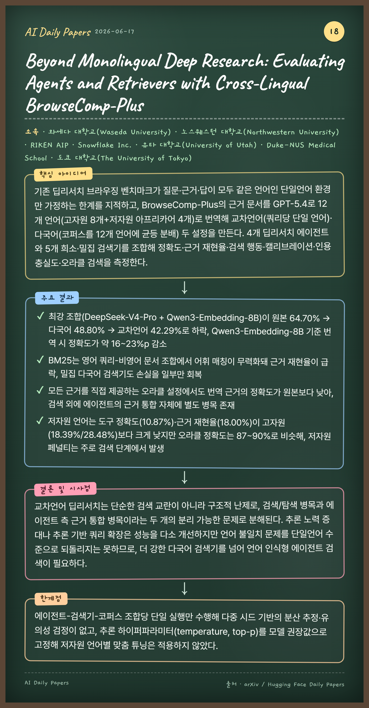
🏛 와세다 대학교(Waseda University), 노스웨스턴 대학교(Northwestern University), RIKEN AIP, Snowflake Inc., 유타 대학교(University of Utah), Duke-NUS Medical School, 도쿄 대학교(The University of Tokyo)
핵심 아이디어
기존 딥리서치 브라우징 벤치마크가 질문·근거·답이 모두 같은 언어인 단일언어 환경만 가정하는 한계를 지적하고, BrowseComp-Plus의 근거 문서를 GPT-5.4로 12개 언어(고자원 8개+저자원 아프리카어 4개)로 번역해 교차언어(쿼리당 단일 언어)·다국어(코퍼스를 12개 언어에 균등 분배) 두 설정을 만든다. 4개 딥리서치 에이전트와 5개 희소·밀집 검색기를 조합해 정확도·근거 재현율·검색 행동·캘리브레이션·인용 충실도·오라클 검색을 측정한다.
주요 결과
최강 조합(DeepSeek-V4-Pro + Qwen3-Embedding-8B)이 원본 64.70% → 다국어 48.80% → 교차언어 42.29%로 하락, Qwen3-Embedding-8B 기준 번역 시 정확도가 약 16~23%p 감소
BM25는 영어 쿼리-비영어 문서 조합에서 어휘 매칭이 무력화돼 근거 재현율이 급락, 밀집 다국어 검색기도 손실을 일부만 회복
모든 근거를 직접 제공하는 오라클 설정에서도 번역 근거의 정확도가 원본보다 낮아, 검색 외에 에이전트의 근거 통합 자체에 별도 병목 존재
저자원 언어는 도구 정확도(10.87%)·근거 재현율(18.00%)이 고자원(18.39%/28.48%)보다 크게 낮지만 오라클 정확도는 87~90%로 비슷해, 저자원 페널티는 주로 검색 단계에서 발생
결론 및 시사점
교차언어 딥리서치는 단순한 검색 교란이 아니라 구조적 난제로, 검색/탐색 병목과 에이전트 측 근거 통합 병목이라는 두 개의 분리 가능한 문제로 분해된다. 추론 노력 증대나 추론 기반 쿼리 확장은 성능을 다소 개선하지만 언어 불일치 문제를 단일언어 수준으로 되돌리지는 못하므로, 더 강한 다국어 검색기를 넘어 언어 인식형 에이전트 검색이 필요하다.
한계점
에이전트-검색기-코퍼스 조합당 단일 실행만 수행해 다중 시드 기반의 분산 추정·유의성 검정이 없고, 추론 하이퍼파라미터(temperature, top-p)를 모델 권장값으로 고정해 저자원 언어별 맞춤 튜닝은 적용하지 않았다.
Aligning Quantum Operators with Large Language Models
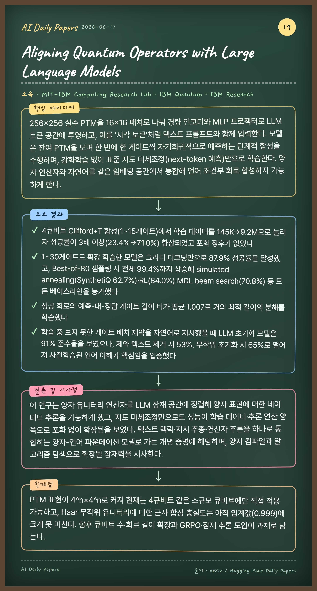
🏛 MIT-IBM Computing Research Lab, IBM Quantum, IBM Research
핵심 아이디어
256×256 실수 PTM을 16×16 패치로 나눠 경량 인코더와 MLP 프로젝터로 LLM 토큰 공간에 투영하고, 이를 '시각 토큰'처럼 텍스트 프롬프트와 함께 입력한다. 모델은 잔여 PTM을 보며 한 번에 한 게이트씩 자기회귀적으로 예측하는 단계적 합성을 수행하며, 강화학습 없이 표준 지도 미세조정(next-token 예측)만으로 학습한다. 양자 연산자와 자연어를 같은 임베딩 공간에서 통합해 언어 조건부 회로 합성까지 가능하게 한다.
주요 결과
4큐비트 Clifford+T 합성(1~15게이트)에서 학습 데이터를 145K→9.2M으로 늘리자 성공률이 3배 이상(23.4%→71.0%) 향상되었고 포화 징후가 없었다
1~30게이트로 확장 학습한 모델은 그리디 디코딩만으로 87.9% 성공률을 달성했고, Best-of-80 샘플링 시 전체 99.4%까지 상승해 simulated annealing(SynthetiQ 62.7%)·RL(84.0%)·MDL beam search(70.8%) 등 모든 베이스라인을 능가했다
성공 회로의 예측-대-정답 게이트 길이 비가 평균 1.007로 거의 최적 길이의 분해를 학습했다
학습 중 보지 못한 게이트 배치 제약을 자연어로 지시했을 때 LLM 초기화 모델은 91% 준수율을 보였으나, 제약 텍스트 제거 시 53%, 무작위 초기화 시 65%로 떨어져 사전학습된 언어 이해가 핵심임을 입증했다
결론 및 시사점
이 연구는 양자 유니터리 연산자를 LLM 잠재 공간에 정렬해 양자 표현에 대한 네이티브 추론을 가능하게 했고, 지도 미세조정만으로도 성능이 학습 데이터·추론 연산 양쪽으로 포화 없이 확장됨을 보였다. 텍스트 맥락·지시 추종·연산자 추론을 하나로 통합하는 양자-언어 파운데이션 모델로 가는 개념 증명에 해당하며, 양자 컴파일과 알고리즘 탐색으로 확장될 잠재력을 시사한다.
한계점
PTM 표현이 4^n×4^n로 커져 현재는 4큐비트 같은 소규모 큐비트에만 직접 적용 가능하고, Haar 무작위 유니터리에 대한 근사 합성 충실도는 아직 임계값(0.999)에 크게 못 미친다. 향후 큐비트 수·회로 길이 확장과 GRPO·잠재 추론 도입이 과제로 남는다.
🏛 The Hong Kong Polytechnic University (Visual Computing Lab, VCLab), OPPO Research Institute
핵심 아이디어
텍스트는 '무엇을' 바꿀지(의미)를, 희소 시각 프롬프트는 '어디를·어떻게'(공간) 바꿀지를 담당하는 상호 보완 신호로 보고 둘을 결합한다. 사전학습된 편집 백본(Qwen-Image-Edit, FLUX.1 Kontext)에 플러그앤플레이로 붙는 제어 분기를 두어, 점 궤적을 기하학 전용 신호가 아니라 이미지 콘텐츠·텍스트와 함께 융합하는 Content-Aware Spatial Controller로 의미 인식 제어 특징을 생성한다. 동영상에서 광학 흐름·점 추적과 MLLM 주석으로 23K개의 텍스트-시각 쌍 데이터셋(TV-Edit-23K)을 구축해 학습한다.
주요 결과
TV-Edit-Qwen은 dense matching distance(MD_d)를 0.0462로 낮춰 최고 드래그 기반 방법 대비 28.7% 개선했다
TV-Edit-Qwen의 prompt following(PF) 점수는 기반 모델 0.86에서 0.93으로 상승해 폐쇄형 상용 모델 NanoBanana Pro(0.89)까지 능가했다
TV-Edit는 마스크 없이도 LPIPS 0.1672, DINOv3 글로벌 일관성 0.9134로 모든 베이스라인 중 최고의 이미지 충실도를 기록했다
동일 의도 하의 모션 크기 제어, 유사 궤적 하의 의미 구분 두 하위 과제(TV-Edit-Bench, 120쌍)에서 일관되게 정밀·의도 충실한 편집을 보였다
결론 및 시사점
단일 모달리티(텍스트 또는 드래그)만으로는 사용자 의도를 온전히 표현하기 어렵다는 한계를 텍스트-시각 공동 지시로 해소해, 기하 정확도와 의미 충실도를 동시에 달성했다. 플러그앤플레이 설계로 여러 편집 파운데이션 모델에 적용 가능하며, 전용 데이터셋과 벤치마크까지 제시해 이 새로운 과제의 기반을 마련했다.
한계점
제어 신호가 희소한 점 궤적에 의존하고, 비디오에서 유도한 정적 배경 위주의 23K 학습 데이터·120개 벤치마크로 평가 범위가 제한적이며, 컨트롤러를 경량화(은닉 차원 절반·블록 수 N=5)했기 때문에 표현력 손실 우려가 있어 time-modulated 주입으로 이를 보완한다.
MotionVLA: Vision-Language-Action Model for Humanoid Motion
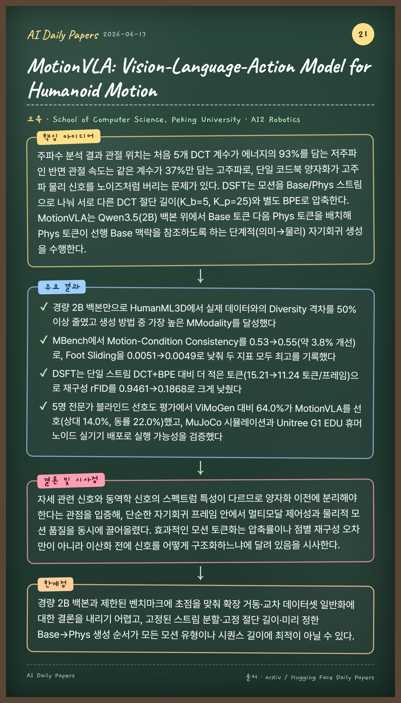
🏛 School of Computer Science, Peking University, AI2 Robotics
핵심 아이디어
주파수 분석 결과 관절 위치는 처음 5개 DCT 계수가 에너지의 93%를 담는 저주파인 반면 관절 속도는 같은 계수가 37%만 담는 고주파로, 단일 코드북 양자화가 고주파 물리 신호를 노이즈처럼 버리는 문제가 있다. DSFT는 모션을 Base/Phys 스트림으로 나눠 서로 다른 DCT 절단 길이(K_b=5, K_p=25)와 별도 BPE로 압축한다. MotionVLA는 Qwen3.5(2B) 백본 위에서 Base 토큰 다음 Phys 토큰을 배치해 Phys 토큰이 선행 Base 맥락을 참조하도록 하는 단계적(의미→물리) 자기회귀 생성을 수행한다.
주요 결과
경량 2B 백본만으로 HumanML3D에서 실제 데이터와의 Diversity 격차를 50% 이상 줄였고 생성 방법 중 가장 높은 MModality를 달성했다
MBench에서 Motion-Condition Consistency를 0.53→0.55(약 3.8% 개선)로, Foot Sliding을 0.0051→0.0049로 낮춰 두 지표 모두 최고를 기록했다
DSFT는 단일 스트림 DCT+BPE 대비 더 적은 토큰(15.21→11.24 토큰/프레임)으로 재구성 rFID를 0.9461→0.1868로 크게 낮췄다
5명 전문가 블라인드 선호도 평가에서 ViMoGen 대비 64.0%가 MotionVLA를 선호(상대 14.0%, 동률 22.0%)했고, MuJoCo 시뮬레이션과 Unitree G1 EDU 휴머노이드 실기기 배포로 실행 가능성을 검증했다
결론 및 시사점
자세 관련 신호와 동역학 신호의 스펙트럼 특성이 다르므로 양자화 이전에 분리해야 한다는 관점을 입증해, 단순한 자기회귀 프레임 안에서 멀티모달 제어성과 물리적 모션 품질을 동시에 끌어올렸다. 효과적인 모션 토큰화는 압축률이나 점별 재구성 오차만이 아니라 이산화 전에 신호를 어떻게 구조화하느냐에 달려 있음을 시사한다.
한계점
경량 2B 백본과 제한된 벤치마크에 초점을 맞춰 확장 거동·교차 데이터셋 일반화에 대한 결론을 내리기 어렵고, 고정된 스트림 분할·고정 절단 길이·미리 정한 Base→Phys 생성 순서가 모든 모션 유형이나 시퀀스 길이에 최적이 아닐 수 있다.